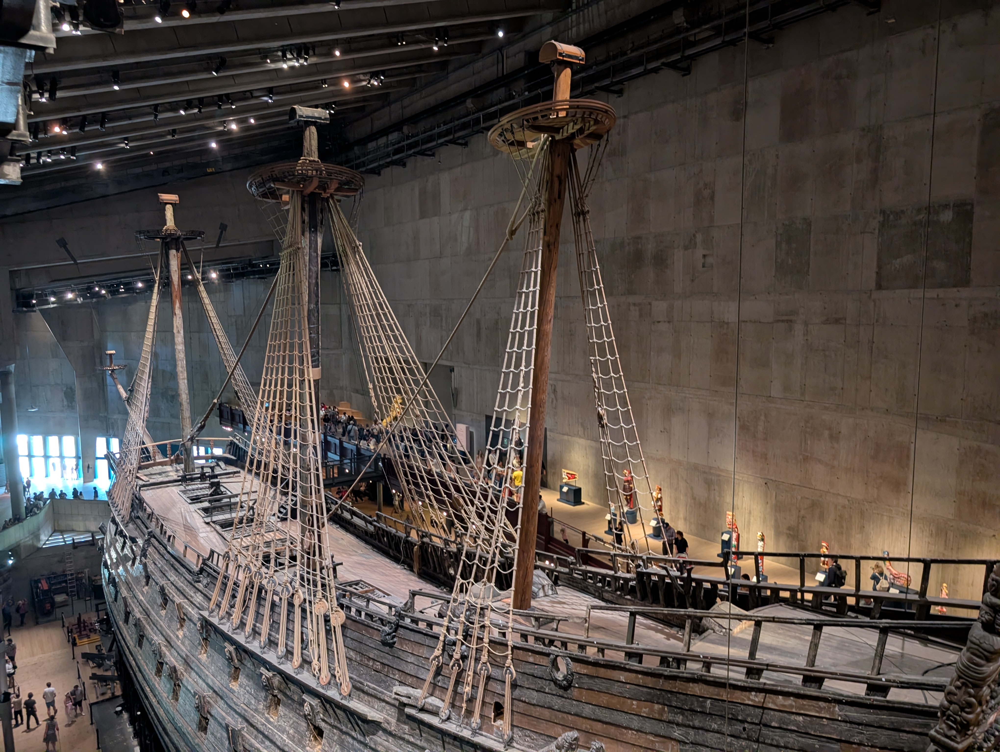
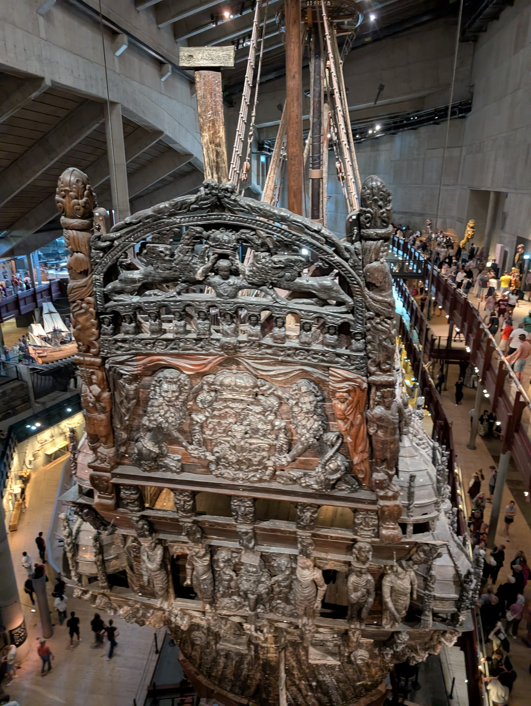
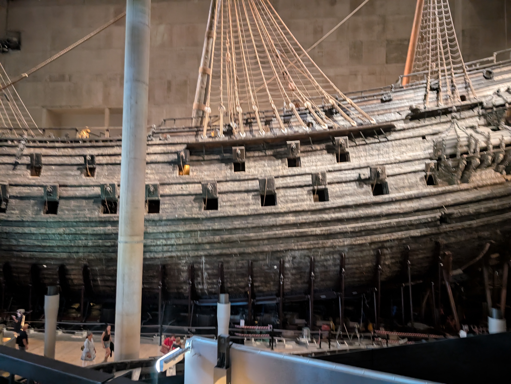

Table of Contents
The Viking Age
The Viking Age lasted from about the year 800 to 1050. Swedish Vikings mostly travelled east, along the rivers of what is now Russia and Ukraine, where they traded and settled.
Gustav Vasa and the Great Power Era
In 1523 Gustav Vasa became king and Sweden left the Kalmar Union with Denmark and Norway. In the 17th century Sweden grew into a great power in northern Europe, with territories around the Baltic Sea.
The Vasa Museum
The warship Vasa sank on its maiden voyage in Stockholm in 1628. It was salvaged in 1961 and is now displayed at the Vasa Museum, which has become one of the most visited museums in Scandinavia. The ship is remarkably well preserved.



Gamla stan, the Old Town
Gamla stan is the medieval heart of Stockholm, with narrow cobbled streets, colourful buildings and the Royal Palace.